Explore distribituions
Joyce Hsiao
2016-02-01
Last updated: 2016-02-06
Code version: 74e1181a9a832b7e95b1d7b4a4b5964cbbba1e00
Objective
Consider three scenarios for comparing distributions between different individuals
Significant individual difference in noise meausre, with one or more individual distributions tightly regulated (one mode).
No significant individual difference in noise measure, with all individual distributions tightly regulated.
No significant individual differences in noise measure, with none of the individual distributions show a pattern consistent with tight regulation.
Set up
library("data.table")
library("dplyr")
library("limma")
library("edgeR")
library("ggplot2")
library("grid")
theme_set(theme_bw(base_size = 12))
source("functions.R")
library("Humanzee")
library("cowplot")
library("MASS")
library("matrixStats")Prepare data
Input annotation of only QC-filtered single cells, with NA19098.r2 removed.
anno_filter <- read.table("../data/annotation-filter.txt",
header = TRUE,
stringsAsFactors = FALSE)
dim(anno_filter)[1] 560 5head(anno_filter, 2) individual replicate well batch sample_id
1 NA19098 r1 A01 NA19098.r1 NA19098.r1.A01
2 NA19098 r1 A02 NA19098.r1 NA19098.r1.A02Import molecule counts after filtering and before any correction.
molecules_filter <- read.table("../data/molecules-filter.txt",
header = TRUE, stringsAsFactors = FALSE)
stopifnot(NROW(anno_filter) == NCOL(molecules_filter))Import final processed molecule counts of endogeneous genes.
molecules_final <- read.table("../data/molecules-final.txt",
header = TRUE, stringsAsFactors = FALSE)
dim(molecules_final)[1] 12192 560stopifnot(NROW(anno_filter) == NCOL(molecules_final))Import gene symbols.
gene_symbols <- read.table(file = "../data/gene-info.txt", sep = "\t",
header = TRUE, stringsAsFactors = FALSE, quote = "")Import pluripotent gene list
cell_cycle_genes <- read.table("../data/cellcyclegenes.txt",
header = TRUE, sep = "\t",
stringsAsFactors = FALSE)
pluripotency_genes <- read.table("../data/pluripotency-genes.txt",
header = TRUE, sep = "\t",
stringsAsFactors = FALSE)$ToImport distance meausre
load("../data/adj-cv.rda")Import permuted p-values
load("../data/permuted-pval.rda")Helper functions
*plot_density
Per gene plot of overlaied density curves computed from individual cell lines.
plot_density <- function(molecules_ENSG, annotation,
individuals, batches = NULL,
which_gene, labels,
xlims = NULL, ylims = NULL, gene_symbols) {
if_present <- which(rownames(molecules_ENSG) == which_gene)
if(length(if_present) == 0) {
stop("Gene not present in the data")
}
library(scales)
library(broman)
crayon <- brocolors("crayon")
if (is.null(batches)) {
individuals <- unique(annotation$individual)
colors <- c("Sunset Orange", "Tropical Rain Forest", "Denim")
dens <- lapply(1:3, function(per_individual) {
which_individual <- annotation$individual == individuals[per_individual]
density(unlist( molecules_ENSG[ rownames(molecules_ENSG) == which_gene,
which_individual] ) )
})
if (is.null(xlims)) xlims <- range(sapply(dens, function(obj) obj$x))
if (is.null(ylims)) ylims <- range(sapply(dens, function(obj) obj$y))
plot(dens[[1]],
xlab = "log2 gene expression", main = "",
ylab = "Density", axes = F, lwd = 0, xlim = xlims, ylim = ylims)
for (i in 1:length(individuals)) {
polygon(dens[[i]],
col = alpha(crayon[colors[i]], .4),
border = "grey40")
}
axis(1); axis(2)
mtext(text = labels, side = 3)
title(main = with(gene_symbols,
external_gene_name[which(ensembl_gene_id == which_gene)]) )
}
if (!is.null(batches)) {
colors <- c("Sunset Orange", "Tropical Rain Forest", "Denim")
individuals <- unique(annotation$individual)
# colors <- c("Sunset Orange", "Tropical Rain Forest", "Denim")
dens <- lapply(1:length(individuals), function(per_individual) {
which_individual <- annotation$individual == individuals[per_individual]
annotation_sub <- annotation[which_individual, ]
molecules_sub <- molecules_ENSG[ , which_individual]
replicates <- unique(annotation_sub$replicate)
dens_batch <- lapply(1:length(replicates), function(per_replicate) {
which_replicate <- annotation_sub$replicate == replicates[per_replicate]
density(unlist( molecules_sub[ rownames(molecules_ENSG) == which_gene,
which_replicate] ) )
})
})
if (is.null(xlims)) {
xlims <- range( c( sapply(dens, function(obj_individual) {
c( sapply(obj_individual, function(obj) {
range(obj$x)
}) )
}) ) )
}
if (is.null(ylims)) {
ylims <- range( c( sapply(dens, function(obj_individual) {
c( sapply(obj_individual, function(obj) {
range(obj$y)
}) )
}) ) )
}
# par(mfrow = c(1,3))
for (i in 1:length(dens)) {
plot(dens[[i]][[1]],
xlab = "log2 gene expression", main = "",
ylab = "Density", axes = F, lwd = 0, xlim = xlims, ylim = ylims)
for (j in 1:length(dens[[i]])) {
polygon(dens[[i]][[j]],
col = alpha(crayon[colors[i]], .4),
border = "grey40")
}
}
axis(1); axis(2)
mtext(text = labels, side = 3)
title(main = with(gene_symbols,
external_gene_name[which(ensembl_gene_id == which_gene)]) )
}
}Pluripotency gene distributions
16 pluripotency genes are included in the data set after filtering.
pluri_pvals <- data.frame(pvals = permuted_pval,
ENSG = rownames(molecules_final))
pluri_pvals <- pluri_pvals[which(rownames(molecules_final) %in%
pluripotency_genes), ]
pluri_symbols <- gene_symbols[which(gene_symbols$ensembl_gene_id %in% pluri_pvals$ENSG) ,
c(1,3)]
pluri_results <- merge(pluri_pvals, pluri_symbols,
by.x = c("ENSG"), by.y = "ensembl_gene_id")
pluri_results <- pluri_results[order(pluri_results$mad_pval), ]
pluri_results ENSG mad_pval external_gene_name
1 ENSG00000088305 0.000000000 DNMT3B
9 ENSG00000163530 0.001640420 DPPA2
11 ENSG00000179059 0.001722441 ZFP42
14 ENSG00000187140 0.004019029 FOXD3
16 ENSG00000204531 0.014107612 POU5F1
7 ENSG00000136997 0.020505249 MYC
8 ENSG00000148200 0.026738845 NR6A1
2 ENSG00000101115 0.035843176 SALL4
12 ENSG00000181449 0.053887795 SOX2
4 ENSG00000121570 0.054790026 DPPA4
15 ENSG00000203909 0.166830709 DPPA5
10 ENSG00000164362 0.229002625 TERT
6 ENSG00000128567 0.250656168 PODXL
5 ENSG00000124762 0.621555118 CDKN1A
3 ENSG00000111704 0.664452100 NANOG
13 ENSG00000184344 0.988763123 GDF3Batch-corrected log2 molecule count
Collapsing across batches
par(mfrow = c(1,4))
for (i in 1:nrow(pluri_results)) {
plot_density(molecules_ENSG = molecules_final,
annotation = anno_filter,
which_gene = pluri_results$ENSG[i],
# labels = round(genes_plot$dist[i], 6),
labels = "",
xlims = c(1,14), ylims = NULL,
gene_symbols = gene_symbols)
}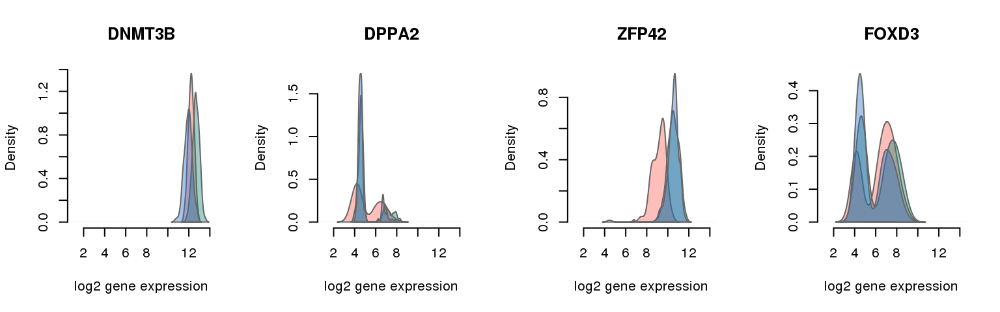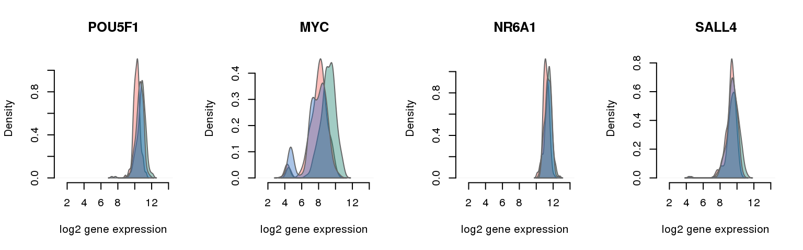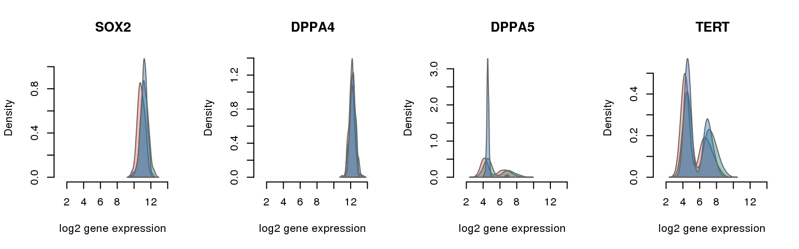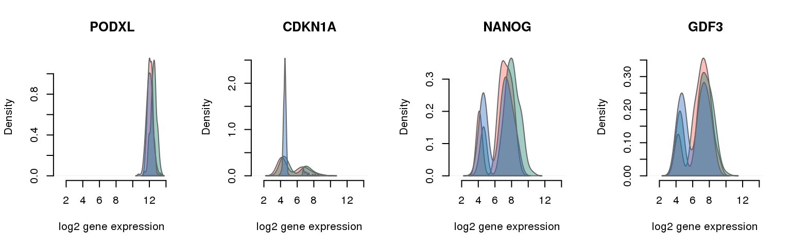
One batch at a time
for (i in 1:nrow(pluri_results)) {
par(mfrow = c(1,3))
for (which_individual in unique(anno_filter$individual)) {
plot_density(molecules_ENSG = molecules_final[ , anno_filter$individual == which_individual],
annotation = anno_filter[anno_filter$individual == which_individual, ],
individuals = anno_filter$individual,
batches = anno_filter$sample_id,
which_gene = pluri_results$ENSG[i],
labels = which_individual,
xlims = c(2,14),
gene_symbols = gene_symbols)
}
}


 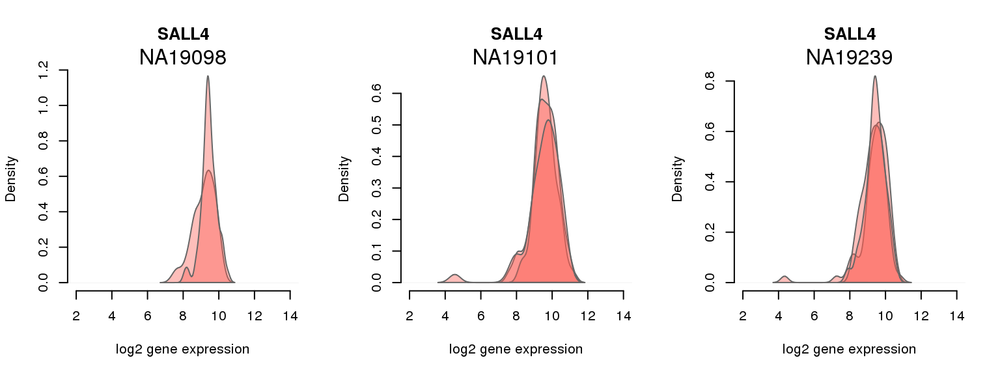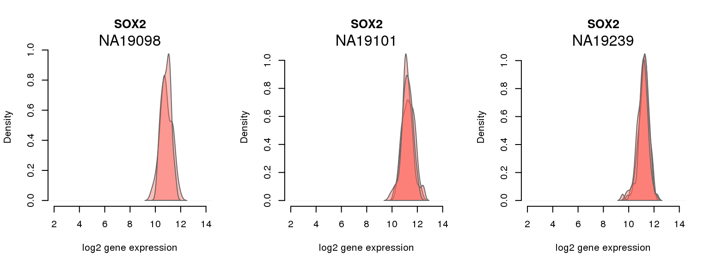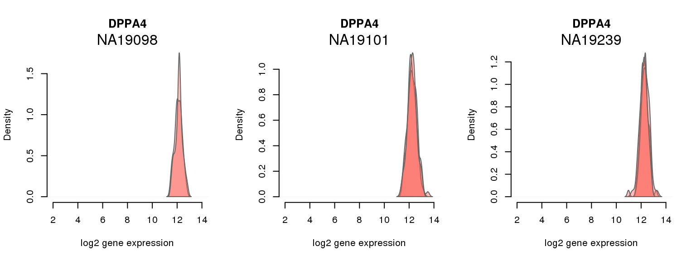
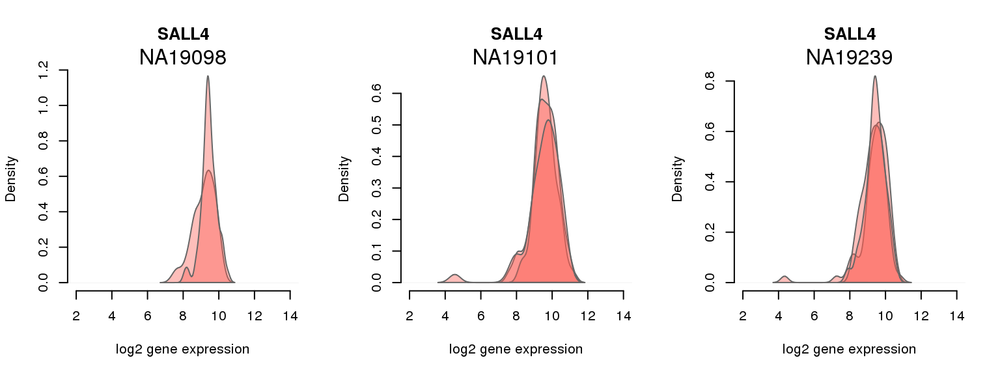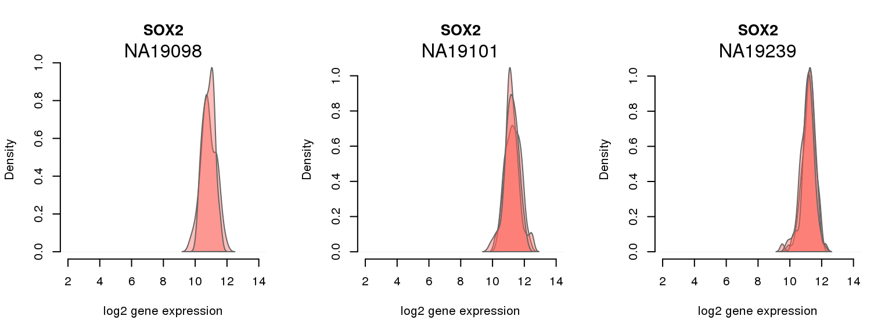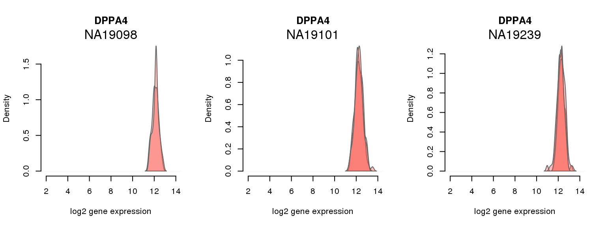 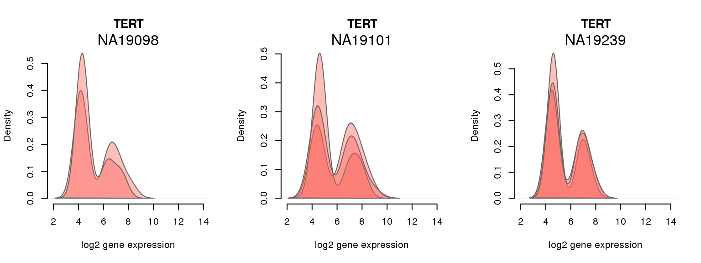
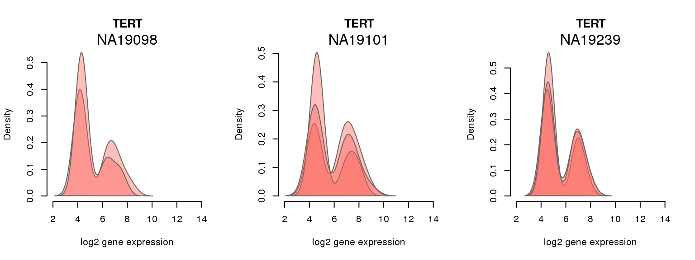


Session information
sessionInfo()R version 3.2.0 (2015-04-16)
Platform: x86_64-unknown-linux-gnu (64-bit)
locale:
[1] LC_CTYPE=en_US.UTF-8 LC_NUMERIC=C
[3] LC_TIME=en_US.UTF-8 LC_COLLATE=en_US.UTF-8
[5] LC_MONETARY=en_US.UTF-8 LC_MESSAGES=en_US.UTF-8
[7] LC_PAPER=en_US.UTF-8 LC_NAME=C
[9] LC_ADDRESS=C LC_TELEPHONE=C
[11] LC_MEASUREMENT=en_US.UTF-8 LC_IDENTIFICATION=C
attached base packages:
[1] grid stats graphics grDevices utils datasets methods
[8] base
other attached packages:
[1] broman_0.59-5 scales_0.2.4 matrixStats_0.14.0
[4] MASS_7.3-40 cowplot_0.3.1 Humanzee_0.1.0
[7] ggplot2_1.0.1 edgeR_3.10.2 limma_3.24.9
[10] dplyr_0.4.2 data.table_1.9.4 knitr_1.10.5
loaded via a namespace (and not attached):
[1] Rcpp_0.12.0 magrittr_1.5 munsell_0.4.2 colorspace_1.2-6
[5] R6_2.1.1 stringr_1.0.0 httr_0.6.1 plyr_1.8.3
[9] tools_3.2.0 parallel_3.2.0 gtable_0.1.2 DBI_0.3.1
[13] htmltools_0.2.6 yaml_2.1.13 digest_0.6.8 assertthat_0.1
[17] reshape2_1.4.1 formatR_1.2 bitops_1.0-6 RCurl_1.95-4.6
[21] evaluate_0.7 rmarkdown_0.6.1 stringi_0.4-1 chron_2.3-45
[25] proto_0.3-10